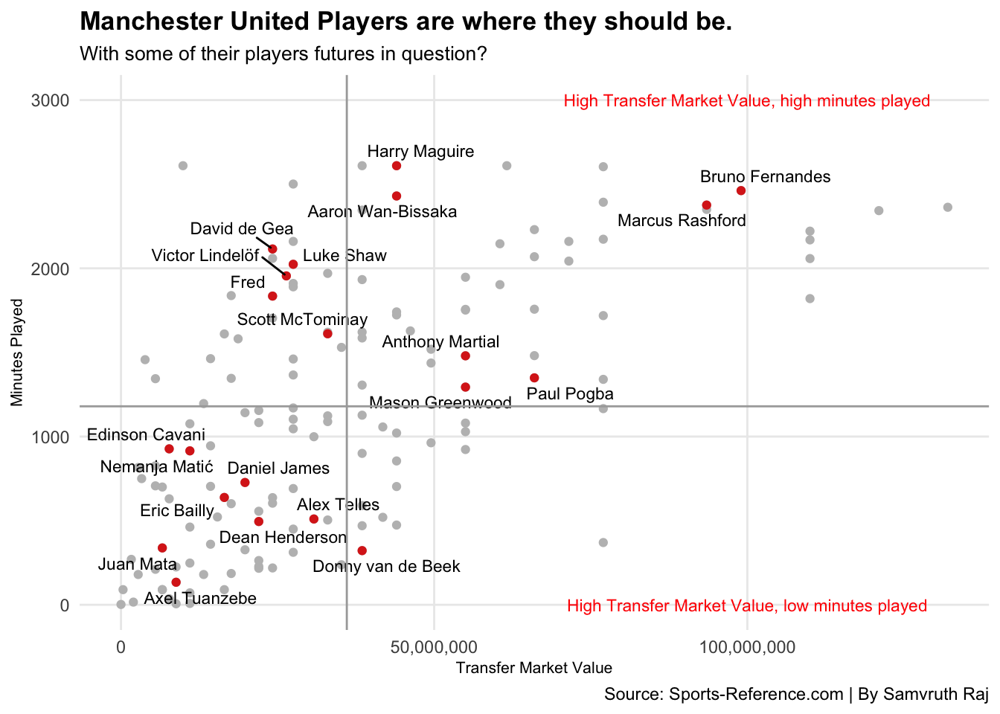

Code
library(tidyverse)
library(scales)
library(ggrepel)Samvruth Raj
April 1, 2021
Manchester United has not won the English Premier League title ever since Sir Alex Ferguson, retired from his role as manager after the 2012/13 season. To this day, his successors David Moyes, Louis Van Gaal, Jose Mourinho, and Ole Gunnar Solskjaer have not been able to get success back to Old Trafford. David Moyes was chosen as the replacement right after Sir Alex retired, however, Moyes did not last long as manager, following Moyes, Louis Van Gaal was at the club from 2014 to 2016, where he managed to win just one cup competition which was the FA Cup. Jose Mourinho was then given the job, in his first season as United manager, he led the team to the FA Community Shield, the League Cup, and the UEFA Europa League, the Red Devils also finished second place, right behind their rivals Man City, who went on to lift the Premier League title in the 2017/18 season. Following Mourinho’s dismissal, Ole Gunnar Solskjaer was appointed the interim boss for the remainder of the season and eventually penned a three-year deal with the Red Devils. Under Ole, Man United has not managed to win any silverware, losing four semifinals and a quarterfinal respectively. Well, one of the reasons Manchester United was so dominant before Sir Alex’s retirement, was good recruitment of players. United has desperately struggled with the recruitment of players, and over the past few years, players like, Angel Di Maria, Radamel Falcao, Alexis Sanchez, who have simply not fit United’s philosophy. Man United is known to give their players enormous contracts which eventually hurt the financials of the club, given that these signings do not perform and eventually leave the club. Ever since Ole has got the permanent job, United seems to be doing just fine in terms of bringing players to Old Trafford, however, work needs to be done if Manchester United wants their glory days back.
Here’s a look at some data.
I will be using one data set, where I have pulled the data from Sports Reference’s Soccer site which mainly deals with the Premier League data only, and I have also looked at Transfer market, to find the current Transfer Values of Manchester United players and players from the Big Six clubs.
Since I wanted to just look at Manchester United, before I could compare them to the Big Six clubs, I filtered Manchester United out from my data set which had all the 20 Premier League teams. I also wanted to look at players with over 100 minutes, which rules out players coming up from the Academy, it would be unfair to look at their contracts as they are still breaking into the first team. It would also rule out players who picked long-term injuries right at the start of the season.
First, I was curious to see the amount of money these players make per minute, doing some work with the data, I used their current transfer values, with the number of minutes they have played this season. I could have used the current wages, but I went a step ahead and say these players were to be sold in the upcoming seasons?
This brings me to my first chart, this Bar chart shows you the players and how much they get paid per minute.
ggplot() +
geom_bar(data=PPM, aes(x= reorder(Player, PayPerMinute), weight=PayPerMinute)) +
coord_flip()+
labs(x="Player",
y="Dollar Per Minute",
title="Van De Beek is the Highest Earner, with the Lowest Minutes played.",
subtitle="Will this season be the end at Old Trafford for the Dutchman?",
caption="Source: Sports-Reference.com | By Samvruth Raj") +
theme_minimal() +
theme(
plot.title = element_text(size = 12, face = "bold"),
axis.title = element_text(size = 9),
plot.subtitle = element_text(size=10),
)Well, looking at this bar chart, I am not surprised Donny Van De Beek tops the chart with the most money being earned compared to the minutes he has played this season, Alex Telles is another summer signing who we all expected to play a lot more, but given Luke Shaw’s current form, Ole sees Alex Telles more on the bench than on the pitch. This chart explains the amount of money the current Manchester United players earn, given the number of minutes they have played this season in the Premier League.
Moving on,
Manchester United as most of us know is considered a “Big Six,” club, with Arsenal, Chelsea, Liverpool, Manchester City, and Tottenham making up the rest. I wanted my analysis to extend and compare Man United to these other clubs.
Over here, going back to my Premier League Data which consists of all the 20 clubs, I am interested in only those Big Six clubs, so I take them out of the data set to further my analysis.
Now that I have my data, I went ahead and found the average minutes played this season and the average transfer value of the players.
# A tibble: 1 × 2
Transfermarketvalueaverage Averageminutes
<dbl> <dbl>
1 36056319. 1180.Well, this brings me to my second chart, rather a scatter plot, not so much a chart.
ggplot()+
geom_point(data = BigSixData, aes(x= TransferMarketvalue, y= Min), color = "grey") +
geom_point(data = MUTD, aes(x=TransferMarketvalue, y=Min), color = "#DA291C") +
geom_text_repel(data= MUTD, aes(x= TransferMarketvalue, y= Min, label= Player), size = 3) +
geom_vline(xintercept = 36056319, color= "dark grey") +
geom_hline(yintercept =1179.795, color= "dark grey" ) +
geom_text(aes(x=100000000, y=0, label="High Transfer Market Value, low minutes played"), color = "red", size = 3) +
geom_text(aes(x=100000000, y=3000, label="High Transfer Market Value, high minutes played"), color = "red", size=3) +
scale_x_continuous(labels = comma) +
labs(x="Transfer Market Value",
y="Minutes Played",
title="Manchester United Players are where they should be.",
subtitle="With some of their players futures in question?",
caption="Source: Sports-Reference.com | By Samvruth Raj") +
theme_minimal() +
theme(
plot.title = element_text(size = 13, face = "bold"),
axis.title = element_text(size = 8),
plot.subtitle = element_text(size=10),
panel.grid.minor = element_blank()
) Warning: Removed 2 rows containing missing values (`geom_point()`).
Here I have all the Manchester United Players in red dots compared them to all the players in the Big Six, they are represented in grey dots. I also have two lines that show the average minutes played and the average transfer values based on this season’s stats.
Looking at this scatter plot, there are four sides, starting upper-left side you have players who fit “low transfer Value, with high minutes played,” under that, which is the lower-left side you have players who fit “low transfer value, low minutes played, following towards the upper-right side you have players who fit”high transfer value, high minutes played,” and finally lower-right side you have players who fit “high transfer value, low minutes played.”
My take from this, that I am surprised to see that most of the starting eleven players for United are in the Upper left and right side, given that United’s players performance is always under question in the media, with only Bruno Fernandes and Marcus Rashford being in the little extreme upper left side. No surprises where Donny Van De Beek is at, as again goes back to my previous chart, he earns a lot of money per minute, with no minutes under his belt, and he has a fairly decent transfer value amount. This scatter plot was made, mainly to look at the Man United players comparing them to players on the Big Six clubs with the number of minutes played this season and what their transfer values are if they were to be sold.
So far, so good.
Furthermore,
When we talk about Football, what everyone talks about are Goals, it probably is the most everyone remembers, spoken about, are Goals period. You can argue that referee decisions, penalties, red cards, and yellow cards. I would agree, but goals are what you are remembered for and sometimes it attracts clubs who want to buy you! Often attacking players make more money than defensive players, given that they have bonuses and different clauses in their contracts.
So to further my analysis, I went ahead and filtered out the forwards and midfielders, from the Big Six clubs, questioning why no defenders and keepers? the simple answer to that would be Defenders mainly score off set pieces and I cannot recollect the last time a goalKeeper scored and it is simply not fair to include them, as their job is defending the goal not scoring, and creating chances. I made sure I had players who had more than 100 minutes to rule out injured and young players who don’t play that much football.
Here I go back to finding the pay per minute for the attacking or forward players, using their Transfer Market value and the number of minutes played this season. I also filtered out Manchester United’s attacking players for my third plot.
One last step before you see my third plot is finding the average goals scored and the average pay per minute.
# A tibble: 1 × 2
GoalAverage PPmAverage
<dbl> <dbl>
1 3.67 43110.There you go, this brings you to my third scatter plot.
ggplot()+
geom_point(data = AttackPPm, aes(x= ppm, y= Gls), color= "grey")+
geom_point(data = MU, aes(x = ppm, y = Gls), color = "#DA291C" ) +
geom_text_repel(data= MU, aes(x= ppm, y= Gls, label= Player), size = 2.5) +
geom_vline(xintercept = 46346.62, color = "dark grey") +
geom_hline(yintercept =3.711864, color = "dark grey" )+
geom_text(aes(x=10000, y=17, label="High goals, low PPM"), color = "red", size = 3) +
geom_text(aes(x=125000, y=17, label="High goals, high PPM"), color = "red", size=3) +
scale_x_continuous(labels = comma) +
labs(x="Pay Per Minute (PPM)",
y="Goals Scored",
title="Is only Manchester United Struggling with their Player's contracts?",
subtitle="Players from other Big Six club's have bad contracts as well!",
caption="Source: Sports-Reference.com | By Samvruth Raj") +
theme_minimal() +
theme(
plot.title = element_text(size = 13, face = "bold"),
axis.title = element_text(size = 8),
plot.subtitle = element_text(size=10),
panel.grid.minor = element_blank()
) Warning: Removed 1 rows containing missing values (`geom_point()`).You have seen this before, again, the scatter plot is split into four sides, starting upper-left you have players who fit “high goals scored and low PPm,” under that, which is the lower-left side you have players who fit “low goals, low PPm,” to your upper-right side you have players who fit “high goals, high PPm,” and finally lower-right side you have players who fit “low goals, High Ppm.” The two lines which split the scatter plot into the four sides are the average goals scored line and the average pay per minute line.
My take, am I surprised at the United Attack? Yes and no.
Marcus Rashford and Bruno Fernandes are the ones who are performing week in and week out and are paid less, on the flip side, Paul Pogba and poor Donny Van de Beek, are getting paid way more than what they should be, I feel bad for going after Donny but the stats don’t lie, but I honestly think he will shine in a United Shirt, first seasons are always hard for players coming in from abroad, that is provided he chooses not to leave the club.
Going back to the ending of my first paragraph of this blog? I spoke about Ole Gunnar Solskjaer, who is the current manager, saying that United are doing just fine in terms of recruitment, I would agree with that, yes some players are still getting paid a lot of money and not performing or playing, you cannot get everything right in football, sometimes a player just does not fit the philosophy, and looking at my third scatter plot, is it only Donny in the lower left side? you have other dots in grey who are from big six clubs. That answers that United players are not the only ones with bad contracts compared to the Big Six.
I promise you this is the last part of my blog, I created a model to see if getting paid per minute and scoring goals have a relationship with each other.
Call:
lm(formula = Gls ~ ppm, data = AttackPPm)
Residuals:
Min 1Q Median 3Q Max
-4.359 -3.166 -1.817 1.957 13.477
Coefficients:
Estimate Std. Error t value Pr(>|t|)
(Intercept) 4.412e+00 1.040e+00 4.244 7.74e-05 ***
ppm -1.593e-05 2.013e-05 -0.791 0.432
---
Signif. codes: 0 '***' 0.001 '**' 0.01 '*' 0.05 '.' 0.1 ' ' 1
Residual standard error: 4.512 on 60 degrees of freedom
(1 observation deleted due to missingness)
Multiple R-squared: 0.01033, Adjusted R-squared: -0.006166
F-statistic: 0.6262 on 1 and 60 DF, p-value: 0.4319I am not a math person, and I don’t like numbers but you won’t have to worry about the numbers, because I will explain what’s going on. Again, I should not be surprised because goals scored and getting paid per minute do not have a relationship. Needless to say that they aren’t statistically significant. Again football is just not about goals and money for an attacking player, it can be so much more, for example, Assists, key passes, tackles which all are not here in this model, so the simple answer nope goals scored and being paid per minute are not related. I was curious to see if there was anything, sadly I did not get much out of this model.